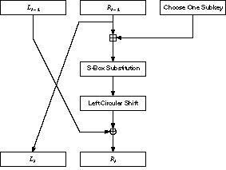
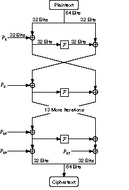
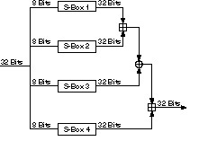
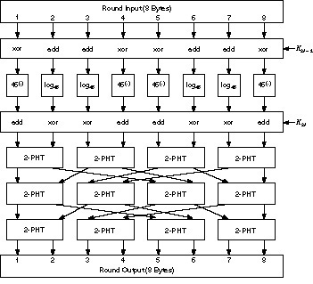
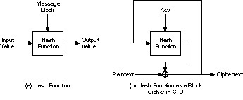

GOST is a block algorithm from the former Soviet Union [655,1393]. “GOST” is an acronym for “Gosudarstvennyi Standard,” or Government Standard, sort of similar to a FIPS, except that it can (and does) refer to just about any kind of standard. (Actually, the full name is Gosudarstvennyi Standard Soyuza SSR, or Government Standard of the Union of Soviet Socialist Republics.) This standard is number 28147-89. The Government Committee for Standards of the USSR authorized the standard, whoever they were.
I don’t know whether GOST 28147-89 was used for classified traffic or just for civilian encryption. A remark at its beginning states that the algorithm “satisfies all cryptographic requirements and not limits the grade of information to be protected.” I have heard claims that it was initially used for very high-grade communications, including classified military communications, but I have no confirmation.
GOST is a 64-bit block algorithm with a 256-bit key. GOST also has some additional key material that will be discussed later. The algorithm iterates a simple encryption algorithm for 32 rounds.
To encrypt, first break the text up into a left half, L. and a right half, R. The subkey for round i is Ki. A round, i, of GOST is:
Li = Ri - 1 Ri = Li - 1 ⊕ f(Ri - 1, Ki)
Figure 14.1 is a single round of GOST. Function f is straightforward. First, the right half and the ith subkey are added modulo 232. The result is broken into eight 4-bit chunks, and each chunk becomes the input to a different S-box. There are eight different S-boxes in GOST; the first 4 bits go into the first S-box, the second 4 bits go into the second S-box, and so on. Each S-box is a permutation of the numbers 0 through 15. For example, an S-box might be:
7, 10, 2, 4, 15, 9, 0, 3, 6, 12, 5, 13, 1, 8, 11

Figure 14.1 One round of GOST.
In this case, if the input to the S-box is 0, the output is 7. If the input is 1, the output is 10, and so on. All eight S-boxes are different; these are considered additional key material. The S-boxes are to be kept secret.
The outputs of the eight S-boxes are recombined into a 32-bit word, then the entire word undergoes an 11-bit left circular shift. Finally, the result XORed to the left half to become the new right half, and the right half becomes the new left half. Do this 32 times and you’re done.
The subkeys are generated simply. The 256-bit key is divided into eight 32-bit blocks: k1, k2, ..., k8. Each round uses a different subkey, as shown in Table 14.1. Decryption is the same as encryption with the order of the kis reversed.
| Round: | 1 | 2 | 3 | 4 | 5 | 6 | 7 | 8 | 9 | 10 | 11 | 12 | 13 | 14 | 15 | 16 |
| Subkey: | 1 | 2 | 3 | 4 | 5 | 6 | 7 | 8 | 1 | 2 | 3 | 4 | 5 | 6 | 7 | 8 |
| Round: | 17 | 18 | 19 | 20 | 21 | 22 | 23 | 24 | 25 | 26 | 27 | 28 | 29 | 30 | 31 | 32 |
| Subkey: | 1 | 2 | 3 | 4 | 5 | 6 | 7 | 8 | 8 | 7 | 6 | 5 | 4 | 3 | 2 | 1 |
The GOST standard does not discuss how to generate the S-boxes, only that they are somehow supplied [655]. This has led to speculation that some Soviet organization would supply good S-boxes to those organizations it liked and bad S-boxes to those organizations it wished to eavesdrop on. This may very well be true, but further conversations with a GOST chip manufacturer within Russia offered another alternative. He generated the S-box permutations himself, using a random-number generator.
More recently, a set of S-boxes used in an application for the Central Bank of the Russian Federation surfaced. These S-boxes are also used in the GOST one-way hash function (see Section 18.11) [657].They are listed in Table 14.2.
| S-box 1: | |||||||||||||||
| 4 | 10 | 9 | 2 | 13 | 8 | 0 | 14 | 6 | 11 | 1 | 12 | 7 | 15 | 5 | 3 |
| S-box 2: | |||||||||||||||
| 14 | 11 | 4 | 12 | 6 | 13 | 15 | 10 | 2 | 3 | 8 | 1 | 0 | 7 | 5 | 9 |
| S-box 3: | |||||||||||||||
| 5 | 8 | 1 | 13 | 10 | 3 | 4 | 2 | 14 | 15 | 12 | 7 | 6 | 0 | 9 | 11 |
| S-box 4: | |||||||||||||||
| 7 | 13 | 10 | 1 | 0 | 8 | 9 | 15 | 14 | 4 | 6 | 12 | 11 | 2 | 5 | 3 |
| S-box 5: | |||||||||||||||
| 6 | 12 | 7 | 1 | 5 | 15 | 13 | 8 | 4 | 10 | 9 | 14 | 0 | 3 | 11 | 2 |
| S-box 6: | |||||||||||||||
| 4 | 11 | 10 | 0 | 7 | 2 | 1 | 13 | 3 | 6 | 8 | 5 | 9 | 12 | 15 | 14 |
| S-box 7: | |||||||||||||||
| 13 | 11 | 4 | 1 | 3 | 15 | 5 | 9 | 0 | 10 | 14 | 7 | 6 | 8 | 2 | 12 |
| S-box 8: | |||||||||||||||
| 1 | 15 | 13 | 0 | 5 | 7 | 10 | 4 | 9 | 2 | 3 | 14 | 6 | 11 | 8 | 12 |
These are the major differences between DES and GOST.
If there is no better way to break GOST other than brute force, it is a very secure algorithm. GOST has a 256-bit key — longer if you count the secret S-boxes. Against differential and linear cryptanalysis, GOST is probably stronger than DES. Although the random S-boxes in GOST are probably weaker than the fixed S-boxes in DES, their secrecy adds to GOST’s resistance against differential and linear attacks. Also, both of these attacks depend on the number of rounds: the more rounds, the more difficult the attack. GOST has twice as many rounds as DES; this alone probably makes both differential and linear cryptanalysis infeasible.
The other parts of GOST are either on par or worse than DES. GOST doesn’t have the same expansion permutation that DES has. Deleting this permutation from DES weakens it by reducing the avalanche effect; it is reasonable to believe that GOST is weaker for not having it. GOST’s use of addition instead is no less secure than DES’s XOR.
The greatest difference between them seems to be GOST’s cyclic shift instead of a permutation. The DES permutation increases the avalanche effect. In GOST a change in one input bit affects one S-box in one round, which then affects two S-boxes in the next round, three the round after that, and so on. GOST requires 8 rounds before a single change in an input affects every output bit; DES only requires 5 rounds. This is certainly a weakness. But remember: GOST has 32 rounds to DES’s 16.
GOST’s designers tried to achieve a balance between efficiency and security. They modified DES’s basic design to create an algorithm that is better suited for software implementation. They seem to have been less sure of their algorithm’s security, and have tried to compensate by making the key length very large, keeping the S-boxes secret, and doubling the number of iterations. Whether their efforts have resulted in an algorithm more secure than DES remains to be seen.
CAST was designed in Canada by Carlisle Adams and Stafford Tavares [10,7]. They claim that the name refers to their design procedure and should conjure up images of randomness, but note the authors’ initials. The example CAST algorithm uses a 64-bit block size and a 64-bit key.
The structure of CAST should be familiar. The algorithm uses six S-boxes with an 8-bit input and a 32-bit output. Construction of these S-boxes is implementation-dependent and complicated; see the references for details.
To encrypt, first divide the plaintext block into a left half and a right half. The algorithm has 8 rounds. In each round the right half is combined with some key material using function f and then XORed with the left half to form the new right half. The original right half (before the round) becomes the new left half. After 8 rounds (don’t switch the left and right halves after the eighth round), the two halves are concatenated to form the ciphertext.
Function f is simple:
Alternatively, the 32-bit input can be XORed with 32 bits of key, divided into four 8-bit quarters, processed through the S-boxes, and then XORed together [7]. N rounds of this appears to be as secure as N + 2 rounds of the other option.
The 16-bit subkey for each round is easily calculated from the 64-bit key. If k1, k2, ..., k8 are the 8 bytes of the key, then the subkeys for each round are:
Round 1: k1, k2 Round 2: k3, k4 Round 3: k5, k6 Round 4: k7, k8 Round 5: k4, k3 Round 6: k2, k1 Round 7: k8, k7 Round 8: k6, k5
The strength of this algorithm lies in its S-boxes. CAST does not have fixed S-boxes; new ones are constructed for each application. Design criteria are in [10]; bent functions are the S-box columns, selected for a number of desirable S-box properties (see Section 14.10). Once a set of S-boxes has been constructed for a given implementation of CAST, they are fixed for all time. The S-boxes are implementation-dependent, but not key-dependent.
It was shown in [10] that CAST is resistant to differential cryptanalysis and in [728] that CAST is resistant to linear cryptanalysis. There is no known way to break CAST other than brute force.
Northern Telecom is using CAST in their Entrust security software package for Macintoshes, PCs, and UNIX workstations. The particular S-boxes they chose are not public. The Canadian government is evaluating CAST as a new encryption standard. CAST is patent-pending.
Blowfish is an algorithm of my own design, intended for implementation on large microprocessors [1388,1389]. The algorithm is unpatented, and the C code in the back of this book is in the public domain. I designed Blowfish to meet the following design criteria.
Blowfish is optimized for applications where the key does not change often, like a communications link or an automatic file encryptor. It is significantly faster than DES when implemented on 32-bit microprocessors with large data caches, such as the Pentium and the PowerPC. Blowfish is not suitable for applications, such as packet switching, with frequent key changes, or as a one-way hash function. Its large memory requirement makes it infeasible for smart card applications.
Blowfish is a 64-bit block cipher with a variable-length key. The algorithm consists of two parts: key expansion and data encryption. Key expansion converts a key of up to 448 bits into several subkey arrays totaling 4168 bytes.
Data encryption consists of a simple function iterated 16 times (see Figure 14.2). Each round consists of a key-dependent permutation, and a key- and data-dependent substitution. All operations are additions and XORs on 32-bit words. The only additional operations are four indexed array data lookups per round.
Blowfish uses a large number of subkeys. These keys must be precomputed before any data encryption or decryption.
The P-array consists of 18 32-bit subkeys:
P1, P2,..., P18
Four 32-bit S-boxes have 256 entries each:
S1,0, S1,1, ..., S1,255 S2,0, S2,1, ..., S2,255 S3,0, S3,1, ..., S3,255 S4,0, S4,1, ..., S4,255
The exact method used to calculate these subkeys will be described later in this section.

Figure 14.2 Blowfish.
Blowfish is a Feistel network (see Section 14.10) consisting of 16 rounds. The input is a 64-bit data element, x. To encrypt:
Divide x into two 32-bit halves: xL, xR For i = 1 to 16: xL = xL ⊕ Pi xR = F(xL) ⊕ xR Swap xL and xR Swap xL and xR (Undo the last swap.) xR = xR ⊕ P17 xL = xL ⊕ P18 Recombine xL and xR

Figure 14.3 Function F.
Function F is as follows (see Figure 14.3):
Divide xL into four eight-bit quarters: a, b, c, and d F(xL) = ((S1,a + S2,b mod 232) ⊕ S3, c) + S4,d mod 232
Decryption is exactly the same as encryption, except that P1, P2, ..., P18 are used in the reverse order. Implementations of Blowfish that require the fastest speeds should unroll the loop and ensure that all subkeys are stored in cache. See [568] for details.
The subkeys are calculated using the Blowfish algorithm. The exact method follows.
In total, 521 iterations are required to generate all required subkeys. Applications can store the subkeys — there’s no need to execute this derivation process multiple times.
Serge Vaudenay examined Blowfish with known S-boxes and r rounds; a differential attack can recover the P-array with 28r + 1 chosen plaintexts [1568]. For certain weak keys that generate bad S-boxes (the odds of getting them randomly are 1 in 214), the same attack requires only 24r + 1 chosen plaintexts to recover the P-array. With unknown S-boxes this attack can detect whether a weak key is being used, but cannot determine what it is (neither the S-boxes nor the P-array). This attack only works against reduced-round variants; it is completely ineffective against 16-round Blowfish.
Of course, the discovery of weak keys is significant, even though they seem impossible to exploit. A weak key is one in which two entries for a given S-box are identical. There is no way to check for weak keys before doing the key expansion. If you are worried, you have to do the key expansion and check for identical S-box entries. I don’t think this is necessary, though.
I know of no successful cryptanalysis against Blowfish. To be safe, do not implement Blowfish with a reduced number of rounds.
Kent Marsh Ltd. has incorporated Blowfish in their FolderBolt security product for Microsoft Windows and Macintosh. It is also part of Nautilus and PGPfone.
SAFER K-64 stands for Secure And Fast Encryption Routine with a Key of 64 bits [1009]. James Massey produced this nonproprietary algorithm for Cylink Corp. and it is incorporated into some of their products. The government of Singapore is planning to use this algorithm — with a 128-bit key [1010] — for a wide variety of applications. There are no patent, copyright, or other restrictions on its use.
The algorithm has a block and key size of 64 bits. It is not a Feistel network like DES (see Section 14.10), but an iterated block cipher: The same function is applied for some number of rounds. Each round uses two 64-bit subkeys, and the algorithm only uses operations on bytes.
The plaintext block is divided into eight byte-length sub-blocks: B1, B2,..., B7, B8. Then the sub-blocks go through r rounds. Finally, an output transformation is applied to the sub-blocks. Each round uses two subkeys: K2i - 1 and K2i.
Figure 14.4 shows one round of SAFER K-64. First, sub-blocks are either XORed or added with bytes of subkey K2i - 1. Then, the eight sub-blocks are subjected to one of two nonlinear transformations:
y = 45x mod 257. (If x = 128, then y = 0.) y = log45 x. (If x = 0, then y = 128.)
These are operations in the finite field GF(257), and 45 is a primitive element in that field. In practical implementations of SAFER K-64, it is quicker to implement this in a lookup table than to calculate new results all the time.

Figure 14.4 One round of SAFER.
Then, sub-blocks are either XORed or added with bytes of subkey K2r. The results of this operation are fed through three layers of linear operations designed to increase the avalanche effect. Each operation is called a Pseudo-Hadamard Transform (PHT). If the inputs to a PHT are a1 and a2, then the outputs are:
b1 = (2a1 + a2) mod 256 b2 = (a1 + a2) mod 256
After r rounds, there is a final output transformation. This is the same as the first step of each round. B1, B4, B5, and B8 are XORed with the corresponding bytes of the last subkey, and B2, B3, B6, and B7 are added to the corresponding bytes of the last subkey. The result is the ciphertext.
Decryption is the reverse process: the output transformation (with subtraction instead of addition), then r reverse rounds. The Inverse PHT (IPHT) is:
a1 = (b1 - b2) mod 256 a2 = (-b1 + 2b2) mod 256
Massey recommends 6 rounds, but you can increase that if you want greater security.
Generating subkeys is easy. The first subkey, K1, is simply the user key. Subsequent subkeys are generated by the following procedure:
Ki+1 = (K1 <<< 3i) + ci
The symbol “<<<” is a left circular shift or a left rotation. The rotation is byte by byte, and ci is a round constant. If cij is the jth byte of the ith round constant, then you can calculate all of the round constants by the formula
cij = 4545(9i + j) mod 256 mod 257 mod 257
Generally, these values are stored in a table.
This alternate key schedule was developed by the Ministry of Home Affairs in Singapore, and then incorporated into SAFER by Massey [1010]. It uses two keys, Ka and Kb, each 64-bits long. The trick is to generate two subkey sequences in parallel, and then alternate subkeys from each sequence. This means that if you choose Ka = Kb, then the 128-bit key is compatible with the 64-bit key Ka.
Massey showed that SAFER K-64 is immune to differential cryptanalysis after 8 rounds and is adequately secure against the attack after 6 rounds. After only 3 rounds linear cryptanalysis is ineffective against this algorithm [1010].
Knudsen found a weakness in the key schedule: For virtually every key, there exists at least one (and sometimes as many as nine) other key that encrypts some different plaintext to identical ciphertexts [862]. The number of different plaintexts that encrypt to identical ciphertexts after 6 rounds is anywhere from 222 to 228. While this attack may not impact SAFER’s security when used as an encryption algorithm, it greatly reduces its security when used as a one-way hash function. In any case, Knudsen recommends at least 8 rounds.
SAFER was designed for Cylink, and Cylink is tainted by the NSA [80]. I recommend years of intense cryptanalysis before using SAFER in any form.
3-Way is a block cipher designed by Joan Daemen [402,410]. It has a 96-bit block length and key length, and is designed to be very efficient in hardware.
3-Way is not a Feistel network, but it is an iterated block cipher. 3-Way can have n rounds; Daemen recommends 11.
The algorithm is simple to describe. To encrypt a plaintext block, x:
For i = 0 to n - 1 x = x XOR Ki x = theta(x) x = pi - 1(x) x = gamma(x) x = pi - 2(x) x = x ⊕ Kn x = theta(x)
The functions are:
Decryption is similar to encryption, except that the bits of the input have to be reversed and the bits of the output have to be reversed. Code to implement 3-Way can be found in the back of this book.
So far, there has been no successful cryptanalysis of 3-Way. The algorithm is unpatented.
This algorithm was developed by Burt Kaliski and Matt Robshaw of RSA Laboratories [810]. The idea behind Crab is to use techniques from one-way hash functions to make a fast encryption algorithm. Hence, Crab is very similar to MD5, and this section assumes you are familiar with Section 18.5.
Crab has a very large block: 1024 bytes. Since Crab is presented more as a research contribution than a real algorithm, no definitive key-generation routines are presented. The authors suggest a method that could turn an 80-bit key into three requisite subkeys, although the algorithm could easily accept variable-length keys.
Crab uses two sets of large subkeys:
These subkeys must all be calculated before encryption or decryption.
To encrypt a 1024-byte block X:
For r = 0 to 3 For g = 0 to 63 A = X(4g)<<<2r B = X(4g+1)<<<2r C = X(4g+2)<<<2r D = X(4g+3)<<<2r For step s = 0 to 7 A = A ⊕ (B + fr(B,C,D) + S512r+8g+s) TEMP = D D = C C = B B = A <<< 5 A = TEMP X(4g)<<<2r = A X(4g+1)<<<2r = B X(4g+2)<<<2r = C X(4g+3)<<<2r = D
The functions fr(B,C,D) are similar to those used in MD5:
f0(B,C,D) = (B ∧ C) ∨ ((¬B) ∧ D) f1(B,C,D) = (B ∧ D) ∨ (C ∧ (¬D)) f2(B,C,D) = B ⊕ C ⊕ D f3(B,C,D) = C ⊕ (B ∨ (¬D))
Decryption is the reverse process.
Generating the subkeys is a large task. Here is how the permutation array, P, could be generated from an 80-bit key, K.
For i = 10 to 255 Ki = Ki - 2 ⊕ Ki - 6 ⊕ Ki - 7 ⊕ Ki - 10
For j = 0 to 1 For i = 256 to 1 step -1 m = ( K256 - i + K257 - i) mod i K257 - i = K257 - i <<< 3 Swap Pi and Pi - 1
The S-array of 2048 32-bit words could be generated in a similar manner, either from the same 80-bit key or from another key. The authors caution that these details should “be viewed as motivational; there may very well be alternative schemes which are both more efficient and offer improved security” [810].
Crab was proposed as a testbed of new ideas and not as a working algorithm. It uses many of the same techniques as MD5. Biham has argued that a very large block size makes an algorithm easier to cryptanalyze [160]. On the other hand, Crab may make efficient use of a very large key. In such a case, “easier to cryptanalyze” might not mean much.
This is a 64-bit block algorithm from Japan [769]. SXAL8 is the basic algorithm; MBAL is an expanded version with a variable block length. Since MBAL does some clever things internally, the authors claim that they can get adequate security with only a few rounds. With a block length of 1024 bytes, MBAL is about 70 times faster than DES. Unfortunately, [1174] shows that MBAL is susceptible to differential cryptanalysis, and [865] shows that it is susceptible to linear cryptanalysis.
RC5 is a block cipher with a variety of parameters: block size, key size, and number of rounds. It was invented by Ron Rivest and analyzed by RSA Laboratories [1324,1325].
There are three operations: XOR, addition, and rotations. Rotations are constant-time operations on most processors and variable rotations are a nonlinear function. These rotations, which depend on both the key and the data, are the interesting operation.
RC5 has a variable-length block, but this example will focus on a 64-bit data block. Encryption uses 2r + 2 key-dependent 32-bit words — S0, S1, S2,..., S2r + 1 — where r is the number of rounds. We’ll generate those words later. To encrypt, first divide the plaintext block into two 32-bit words: A and B. (RC5 assumes a little-endian convention for packing bytes into words: The first byte goes into the low-order bit positions of register A, etc.) Then:
A = A + S0 B = B + S1 For i = 1 to r: A = ((A ⊕ B) <<< B) + S2i B = ((B ⊕ A) <<< A) + S2i + 1
The output is in the registers A and B.
Decryption is just as easy. Divide the plaintext block into two words, A and B, and then:
For i = r down to 1: B = ((B - S2i + 1) >>> A) ⊕ A A = ((A - S2i) >>> B) ⊕ B B = B - S1 A = A - S0
The symbol “>>>” is a right circular shift. Of course, all addition and subtraction are mod 232.
Creating the array of keys is more complicated, but also straightforward. First, copy the bytes of the key into an array, L, of c 32-bit words, padding the final word with zeros if necessary. Then, initialize an array, S, using a linear congruential generator mod 232:
S0 = P for i = 1 to 2(r + 1) – 1: Si = (Si - 1 + Q) mod 232
P = 0xb7e15163 and Q = 0x9e3779b9; these constants are based on the binary
representation of e and phi.
Finally, mix L into S:
i = j = 0 A = B = 0 do 3n times (where n is the maximum of 2(r + 1) and c): A = Si = (Si + A + B) <<< 3 B = Lj = (Lj + A + B) <<< (A + B) i = (i + 1) mod 2(r + 1) j = (j + 1) mod c
RC5 is actually a family of algorithms. We just defined RC5 with a 32-bit
word size and 64-bit block; there’s no reason why the same algorithm can’t
have a 64-bit word size and 128-bit block size. For w = 64, P and Q are
0xb7e151628aed2a6b and 0x9e3779b97f4a7c15, respectively. Rivest
designates particular implementations of RC5 as RC5-w/r/b, where w is the word size, r is the number of rounds, and b is the length of the key in bytes.
RC5 is new, but RSA Laboratories has spent considerable time analyzing it with a 64-bit block. After 5 rounds, the statistics look very good. After 8 rounds, every plaintext bit affects at least one rotation. There is a differential attack that requires 224 chosen plaintexts for 5 rounds, 245 for 10 rounds, 253 for 12 rounds, and 268 for 15 rounds. Of course, there are only 264 possible chosen plaintexts, so this attack won’t work for 15 or more rounds. Linear cryptanalysis estimates indicate that it is secure after 6 rounds. Rivest recommends at least 12 rounds, and possibly 16 [1325]. This number may change.
RSADSI is in the process of patenting RC5, and the name is trademarked. The company claims that license fees will be very small, but you’d better check with them.
There is an algorithm called CRYPTO-MECCANO in the literature [301]; it is insecure. Four Japanese cryptographers presented an algorithm based on chaotic maps at Eurocrypt ’91 [687,688]; Biham cryptanalyzed the algorithm at the same conference [157]. Another algorithm relies on subsets of a particular set of random codes [693]. There are several algorithms based on the theory of error-correcting codes: a variant of the McEliece algorithm (see Section 19.7) [786,1290], the Rao-Nam algorithm [1292, 733, 1504, 1291, 1056, 1057, 1058, 1293], variants of the Rao-Nam algorithm [464,749,1503], and the Li-Wang algorithm [964,1561] — they are all insecure. CALC is insecure [1109]. An algorithm called TEA, for Tiny Encryption Algorithm, is too new to comment on [1592]. Vino is another algorithm [503]. MacGuffin, a block algorithm by Matt Blaze and me, is also insecure [189]; it was broken at the same conference it was proposed. BaseKing, similar in design philosophy as 3-way but with a 192-bit block [402], is too new to comment on.
There are many more block algorithms outside the cryptology community. Some are used by various government and military organizations. I have no information about any of those. There are also dozens of proprietary commercial algorithms. Some might be good; most are probably not. If companies do not feel that their interests are served by making their algorithms public, it is best to assume they’re right and avoid the algorithm.
In Section 11.1, I described Shannon’s principles of confusion and diffusion. Fifty years after these principles were first written, they remain the cornerstone of good block cipher design.
Confusion serves to hide any relationship between the plaintext, the ciphertext, and the key. Remember how linear and differential cryptanalysis can exploit even a slight relationship between these three things? Good confusion makes the relationship statistics so complicated that even these powerful cryptanalytic tools won’t work.
Diffusion spreads the influence of individual plaintext or key bits over as much of the ciphertext as possible. This also hides statistical relationships and makes cryptanalysis more difficult.
Confusion alone is enough for security. An algorithm consisting of a single key-dependent lookup table of 64 bits of plaintext to 64 bits of ciphertext would be plenty strong. The problem is that large lookup tables require lots of memory to implement: 1020 bytes of memory for the table just mentioned. The whole point of block cipher design is to create something that looks like a large lookup table, but with much smaller memory requirements.
The trick is to repeatedly mix confusion (with much smaller tables) and diffusion in a single cipher in different combinations. This is called a product cipher. Sometimes a block cipher that incorporates layers of substitution and permutation is called a substitution-permutation network, or even an SP network.
Look back at function f of DES. The expansion permutation and P-box perform diffusion; the S-boxes perform confusion. The expansion permutation and P-box are linear; the S-boxes are nonlinear. Each operation is pretty simple on its own; together they work pretty well.
DES also illustrates a few more principles of block cipher design. The first is the idea of an iterated block cipher. This simply means taking a simple round function and iterating it multiple times. Two-round DES isn’t very strong; it takes 5 rounds before all of the output bits are dependent on all of the input bits and all of the key bits [1078,1080]. Sixteen-round DES is strong; 32-round DES is even stronger.
Most block algorithms are Feistel networks. This idea dates from the early 1970s [552,553]. Take a block of length n and divide it into two halves of length n/2: L and R. Of course, n must be even. You can define an iterated block cipher where the output of the ith round is determined from the output of the previous round:
Li = Ri - 1 Ri = Li - 1 ⊕ f(Ri - 1, Ki)
Ki is the subkey used in the ith round and f is an arbitrary round function.
You’ve seen this concept in DES, Lucifer, FEAL, Khufu, Khafre, LOKI, GOST, CAST, Blowfish, and others. Why is it such a big deal? The function is guaranteed to be reversible. Because XOR is used to combine the left half with the output of the round function, it is necessarily true that
Li - 1 ⊕ f(Ri - 1, Ki) ⊕ f(Ri - 1, Ki) = Li - 1
A cipher that uses this construction is guaranteed to be invertible as long as the inputs to f in each round can be reconstructed. It doesn’t matter what f is; f need not be invertible. We can design f to be as complicated as we please, and we don’t have to implement two different algorithms — one for encryption and another for decryption. The structure of a Feistel network takes care of all this automatically.
DES has the property that if EK(P) = C, then EK’(P’) = C’, where P’, C’, and K’ are the bit-wise complements of P, C, and K. This property reduces the complexity of a brute-force attack by a factor of two. LOKI has complementation properties that reduce the complexity of a brute-force attack by a factor of 256.
A simple relation can be defined as [857]:
If EK(P) = C, then Ef(K)(g(P,K)) = h(C,K)
where f, g, and h are simple functions. By simple I mean that they are easy to compute, much easier than an iteration of the block cipher. In DES, f is the bit-wise complement of K, g is the bit-wise complement of P, and h is the bit-wise complement of C. This is a result of XORing the key into part of the text.
In a good block cipher, there are no simple relations. Methods for finding some of these weaknesses are in [917].
When discussing an algorithm, the question of whether it is a group arises. The elements of the group are the ciphertext blocks with each possible key, and the group operation is composition. Looking at an algorithmos group structure is an attempt to get a handle on just how much extra scrambling happens under multiple encryption.
The useful question is, however, not whether an algorithm is actually a group, but just how close to a group it is. If it were only lacking one element, it would not be a group; but double encryption would be — statistically speaking — a waste of time. The work on DES showed that DES is very far away from being a group. There are still some interesting questions about the semigroup that DES encryption generates. Does it contain the identity: That is, does it even generate a group? To put it another way, does some combination of encryption (not decryption) operations eventually generate the identity function? If so, how long is the shortest such combination?
The goal is to estimate the size of the keyspace for a theoretical brute-force attack, and the result is a greatest lower bound on the keyspace entropy.
In a good block cipher, all keys are equally strong. Algorithms with a small number of weak keys, like DES, are generally no problem. The odds of picking one at random are very small, and it’s easy to test for and discard them. However, these weak keys can sometimes be exploited if the block cipher is used as a one-way hash function (see Section 18.11).
The study of differential and linear cryptanalysis has shed significant light on the theory of good block cipher design. The inventors of IDEA introduced the concept of differentials, a generalization of the basic idea of characteristics [931]. They argued that block ciphers can be designed to resist this attack; IDEA is the result of that work [931]. This concept was further formalized in [1181,1182], when Kaisa Nyberg and Lars Knudsen showed how to make block ciphers provably secure against differential cryptanalysis. This theory has extensions to higher-order differentials [702,161,927,858,860] and partial differentials [860]. Higher-order differentials seem to apply only to ciphers with a small number of rounds, but partial differentials combine nicely with differentials.
Linear cryptanalysis is newer, and is still being improved. Notions of key ranking [1019] and multiple approximations [811,812] have been defined. other work that extends the idea of linear cryptanalysis can be found in [1270]; [938] tries to combine linear and differential cryptanalysis into one attack. It is unclear what design techniques will protect against these sorts of attacks.
Knudsen has made some progress, considering some necessary (but not perhaps sufficient) criteria for what he calls practically secure Feistel networks: ciphers that resist both linear and differential cryptanalysis [857]. Nyberg introduced in linear cryptanalysis an analogy to the concept of differentials from differential cryptanalysis [1180].
Interestingly enough, there seems to be a duality between differential and linear cryptanalysis. This duality becomes apparent both in the design of techniques to construct good differential characteristics and linear approximations [164,1018], and also in the design criteria for making algorithms that are secure against both attacks [307]. Exactly where this line of research will lead is still unknown. As a start, Daemen has developed an algorithm-design strategy based on linear and differential cryptanalysis [402].
The strength of various Feistel networks — and specifically their resistance to differential and linear cryptanalysis — is tied directly to their S-boxes. This has prompted a spate of research on what constitutes a good S-box.
An S-box is simply a substitution: a mapping of m-bit inputs to n-bit outputs. Previously I talked about one large lookup table of 64-bit inputs to 64-bit outputs; that would be a 64*64-bit S-box. An S-box with an m-bit input and an n-bit output is called a m*n-bit S-box. S-boxes are generally the only nonlinear step in an algorithm; they are what give a block cipher its security. In general, the bigger they are, the better.
DES has eight different 6*4-bit S-boxes. Khufu and Khafre have a single 8*32-bit S-box, LOKI has a 12*8-bit S-box, and both Blowfish and CAST have 8*32-bit S-boxes. In IDEA the modular multiplication step is effectively the S-box; it is a 16*16-bit S-box. The larger this S-box, the harder it is to find useful statistics to attack using either differential or linear cryptanalysis [653,729,1626]. Also, while random S-boxes are usually not optimal to protect against differential and linear attacks, it is easier to find strong S-boxes if the S-boxes are larger. Most random S-boxes are nonlinear, nondegenerate, and have strong resistance to linear cryptanalysis — and the fraction that does not goes down rapidly as the number of input bits decreases [1185,1186,1187].
The size of m is more important than the size of n. Increasing the size of n reduces the effectiveness of differential cryptanalysis, but greatly increases the effectiveness of linear cryptanalysis. In fact, if n ≥ 2m - m, then there is definitely a linear relation of the input and output bits of the S-box. And if n ≥ 2m, then there is a linear relation of only the output bits [164].
Much of this work involves the study of Boolean functions [94,1098,1262,1408]. In order to be secure, the Boolean functions used in S-boxes must satisfy specific conditions. They should not be linear or affine, nor even close to linear or affine [9,1177,1178,1188]. There should be a balance of zeros and ones, and no correlations between different combinations of bits. The output bits should behave independently when any single input bit is complemented. These design criteria are also related to the study of bent functions: functions which can be shown to be optimally nonlinear. Although their definition is simple and natural, their study is very complicated [1344, 1216, 947, 905, 1176, 1271, 295, 296, 297, 149, 349, 471, 298].
One property that seems very important is the avalanche effect: how many output bits of an S-box change when some subset of the input bits are changed. It’s easy to impose conditions on Boolean functions so that they satisfy certain avalanche criteria, but constructing them is a harder task. The strict avalanche criteria (SAC) guarantees that exactly half of the output bits change when one input bit changes [1586]. See also [982,571,1262,399]. One paper attempts to look at all these criteria in terms of information leakage [1640].
A few years ago cryptographers proposed choosing S-boxes so that the difference distribution table for each S-box is uniform. This would provide immunity against differential cryptanalysis by smoothing out the differentials in any particular round [6,443,444,1177]. LOKI is an example of this design. However, this approach can sometimes aid in differential cryptanalysis [172]. Actually, a better approach is making sure that the maximum differential is as small as possible. Kwangjo Kim proposed five criteria for the construction of S-boxes [834], similar to the design criteria for the DES S-boxes.
Choosing good S-boxes is not an easy task; there are many competing ideas on how to do it. Four general approaches can be identified.
There has been some call for a combination of the “math-made” and “man-made” approaches [1334], but the real debate seems to be between randomly chosen S-boxes and S-boxes with certain properties. Certainly the latter approach has the advantage of being optimal against known attacks — linear and differential cryptanalysis — but it offers unknown protection against unknown attacks. The designers of DES knew about differential cryptanalysis, and its S-boxes were optimized against it. They did not seem to know about linear cryptanalysis, and the DES S-boxes are very weak against it [1018]. Randomly selected S-boxes in DES would be weaker against differential cryptanalysis and stronger against linear cryptanalysis.
On the other hand, random S-boxes may not be optimal against these attacks, but they can be made sufficiently large and therefore sufficiently resistant. Also, they are more likely to be sufficiently resistant against unknown attacks. The debate is still raging, but my personal feeling is that S-boxes should be as large as possible, random, and key-dependent.
It is easy to design a block cipher. If you think of a 64-bit block cipher as a permutation of the 64-bit numbers, it is clear that almost all of those permutations are secure. What is difficult is to design a block cipher that is not only secure, but can also be easily described and simply implemented.
It’s is easy to design a block cipher if you have sufficient memory for 48*32 S-boxes. It’s hard to design an insecure DES variant if you iterate it for 128 rounds. If the length of your key is 512 bits, you really do not care if there are key-complementation properties.
The real trick — and the reason that real-world block cipher design is very difficult — is to design a block cipher with the smallest possible key, the smallest possible memory requirement, and the fastest possible running time.
The simplest way to encrypt with a one-way function is to hash the previous ciphertext block concatenated with the key, then XOR the result with the current plaintext block:
Ci = Pi ⊕ H(K,Ci - 1) Pi = Ci ⊕ H(K,Ci - 1)
Set the block length equal to the output of the one-way hash function. This, in effect uses the one-way function as a block cipher in CFB mode. A similar construction can use the one-way function in OFB mode:
Ci = Pi ⊕ Si; Si = H(K,Ci - 1) Pi = Ci ⊕ Si; Si = H(K,Ci - 1)
The security of this scheme depends on the security of the one-way function.
This method, invented by Phil Karn and placed in the public domain, makes an invertible encryption algorithm out of certain one-way hash functions.
The algorithm operates on plaintext and ciphertext in 32-byte blocks. The key can be any length, although certain key lengths will be more efficient for certain one-way hash functions. For the one-way hash functions MD4 and MD5, 96-byte keys work best.
To encrypt, first split the plaintext into two 16-byte halves: P1 and Pr. Then, split the key into two 48-byte halves: K1 and Kr.
P = P1, Pr K = K1, Kr
Append K1 to P1 and hash it with a one-way hash function, then XoR the result of the hash with Pr to produce Cr, the right half of the ciphertext. Then, append Kr to Cr and hash it with the one-way hash function. XOR the result with P1 to produce C1. Finally, append Cr to C1 to produce the ciphertext.
Cr = Pr ⊕ H(P1, K1) C1 = P1 ⊕ H(Cr, Kr) C = C1, Cr
To decrypt, simply reverse the process. Append Kr to Cr, hash and XOR with C1 to produce P1. Append K1 to P1, hash and XoR with Cr to produce Pr.
P1 = C1 ⊕ H(Cr, Kr) Pr = Cr ⊕ H(P1, K1) P = P1, Pr
The overall structure of Karn is the same as many of the other block algorithms discussed in this section. It has only two rounds, because the complexity of the algorithm is embedded in the one-way hash function. And since the key is used only as the input to the hash function, it cannot be recovered even using a chosen-plaintext attack — assuming, of course, that the one-way hash function is secure.
Michael Luby and Charles Rackoff showed that Karn is not secure [992]. Consider two single-block messages: AB and AC. If a cryptanalyst knows both the plaintext and the ciphertext of the first message, and knows the first half of the plaintext of the second message, then he can easily compute the entire second message. This known-plaintext attack is useful only in certain circumstances, but it is a major security problem.
A three-round encryption algorithm avoids this problem [992,1643,1644]. It uses three different hash functions: H1, H2, and H3. Further work shows that H1 can equal H2, or that H2 can equal H3, but not both [1193]. Also, H1, H2, and H3 cannot be based on iterating the same basic function [1643]. Anyway, assuming that H(k,x) behaves like a pseudo-random function, here is a three-round version:
R1 = R0 ⊕ H(K1, L0)
L1 = L0 ⊕ H(Kr, R1)
R2 = R1 ⊕ H(K1, L1)
MDC, invented by Peter Gutmann [676], is a means of turning one-way hash functions into a block cipher that runs in CFB mode. The cipher runs almost as fast as the hash function and is at least as secure as the hash function. The rest of this section assumes you are familiar with Chapter 18.
Hash functions such as MD5 and SHA use a 512-bit text block to transform an input value (128 bits with MD5, and 160 bits with SHA) into an output value of equal size. This transformation is not reversible, but it is perfect for CFB mode: The same operation is used for both encryption and decryption.
Let’s look at MDC with SHA. MDC has a 160-bit block size and a 512-bit key. The hash function is run “sideways,” with the old hash state as the input plaintext block (160 bits) and the 512-bit hash input as a key (see Figure 14.5). Normally, when using the hash to simply hash some input, the 512-bit input to the hash is varied as each new 512-bit block is hashed. But in this case the 512-bit input becomes an unchanging key.

Figure 14.5 Message Digest Cipher (MDC).
MDC can be used with any one-way hash function: MD4, MD5, Snefru, and others. It is unpatented. Anyone can use it at any time, in any way, royalty-free [676].
However, I donot trust this construction. It is possible to attack the hash function in a way that hash functions are not designed to withstand. It is not important for hash functions to be able to resist a chosen-plaintext attack, where a cryptanalyst chooses several of those starting 160-bit values, has them “encrypted” by the same 512-bit “key,” and uses this to learn some information about the 512-bit key used. Since the designers didnot have to worry about this, it seems like a bad idea to count on your cipher being able to resist this attack.
While these constructions can be secure, they depend on the choice of the underlying one-way hash function. A good one-way hash function doesnot necessarily make a secure encryption algorithm. Cryptographic requirements are different. For example, linear cryptanalysis is not a viable attack against one-way hash functions, but works against encryption algorithms. A one-way hash function such as SHA could have linear characteristics which, while not affecting its security as a one-way hash function, could make it insecure in an encryption algorithm such as MDC. I know of no cryptanalytic analysis of particular one-way hash functions as block ciphers; wait for such analysis before you trust any of them.
It’s a tough decision. DES is almost certainly insecure against the major governments of the world unless you only encrypt very small chunks of data for a single key. It’s probably all right against anyone else, but that is changing soon. Brute-force DES key search machines will quickly become economical for all sorts of organizations.
Biham’s key-dependent S-boxes for DES should be secure for at least a few years against all but the most well-funded adversaries, and possibly even from them. If you need security that lasts decades or fear the cryptanalytic efforts of major governments, use triple-DES with three independent keys.
The other algorithms arenot worthless. I like Blowfish because it is fast and I wrote it. 3-WAY looks good, and GoST is probably okay. The problem with any recommendation is that the NSA almost certainly has an array of impressive cryptanalytic techniques that are still classified, and I do not know which algorithms they can break with them. Table 14.3 gives timing measurements for some algorithms. These are meant for comparison purposes only.
| Algorithm | Encryption Speed (Kilobytes/second) | Algorithm | Encryption Speed (Kilobytes/second) |
|---|---|---|---|
| Blowfish (12 rounds) | 182 | MDC (using MD4) | 186 |
| Blowfish (16 rounds) | 135 | MDC (using MD5) | 135 |
| Blowfish (20 rounds) | 110 | MDC (using SHA) | 23 |
| DES | 35 | NewDES | 233 |
| FEAL-8 | 300 | REDOC II | 1 |
| FEAL-16 | 161 | REDOC III | 78 |
| FEAL-32 | 91 | RC5-32/8 | 127 |
| GOST | 53 | RC5-32/12 | 86 |
| IDEA | 70 | RC5-32/16 | 65 |
| Khufu (16 rounds) | 221 | RC5-32/20 | 52 |
| Khufu (24 rounds) | 153 | SAFER (6 rounds) | 81 |
| Khufu (32 rounds) | 115 | SAFER (8 rounds) | 61 |
| Luby-Rackoff (using MD4) | 47 | SAFER (10 rounds) | 49 |
| Luby-Rackoff (using MD5) | 34 | SAFER (12 rounds) | 41 |
| Luby-Rackoff (using SHA) | 11 | 3-Way | 25 |
| Lucifer | 52 | Triple-DES | 12 |
My favorite algorithm is IDEA. Its 128-bit key, combined with its resistance to any public means of cryptanalysis, gives me a warm, fuzzy feeling about the algorithm. The algorithm has been analyzed by a lot of different groups, and no serious results have been announced yet. Barring extraordinary cryptanalytic news tomorrow, I am betting on IDEA today.